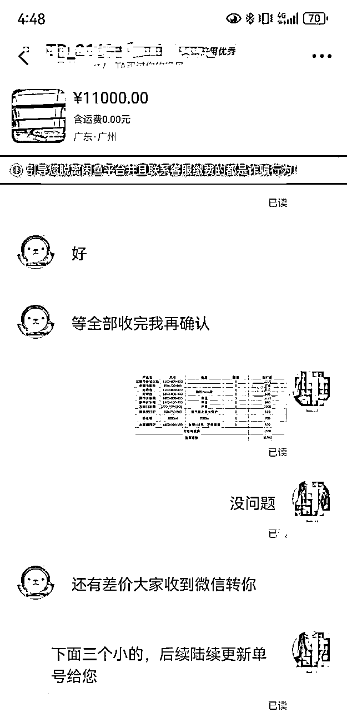
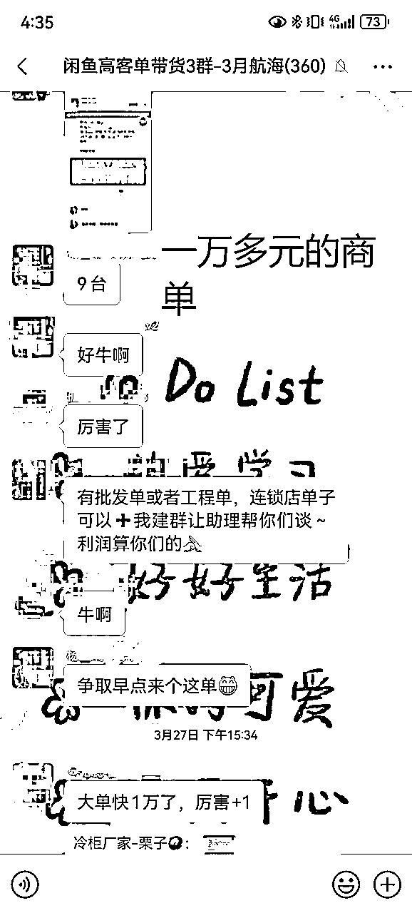
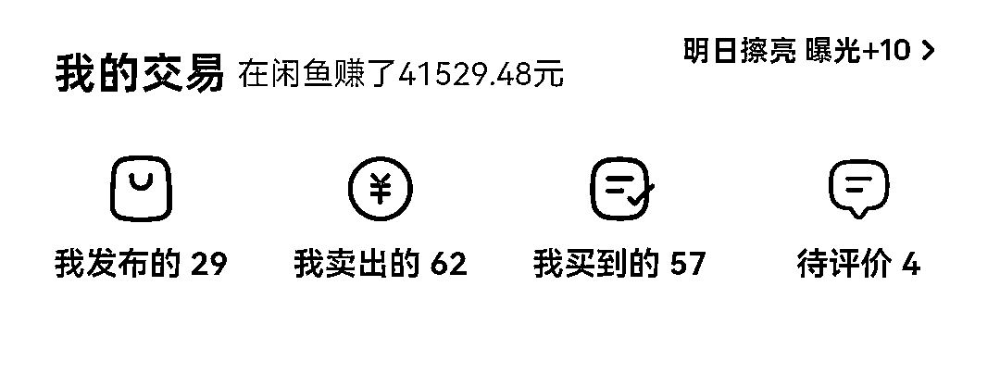
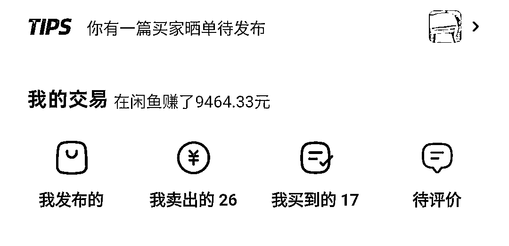
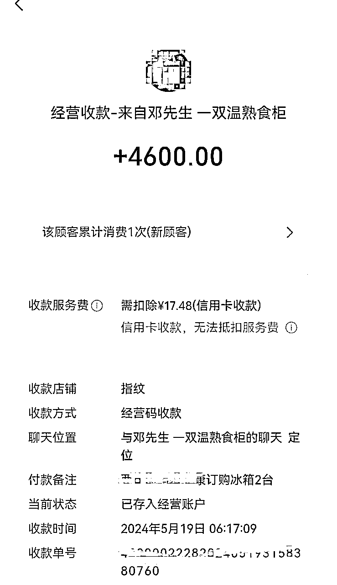
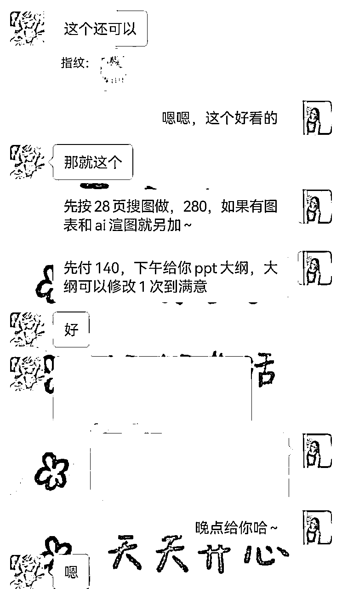
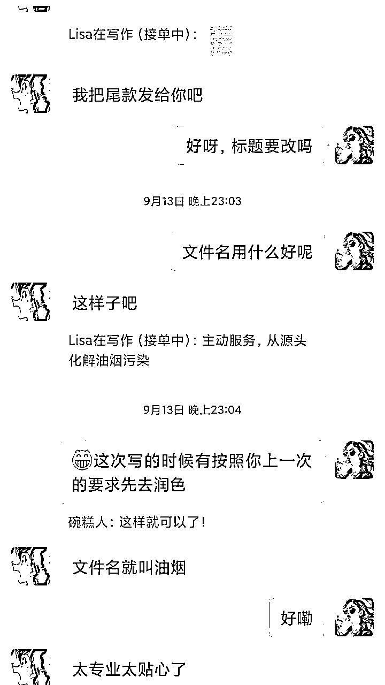

来源：https://bxqx5bfc0gb.feishu.cn/docx/EdSCdmfLUoMCKoxtZCMc42G6nPg
Hello，各位圈友们，大家好。
我是指纹，主要聚焦于闲鱼变现和小红书博主两个领域。
去年3月，为了副业赚钱，我加入了生财。一开始只是围观，迟迟没有下水。后来小打小闹了几个项目，却总是赚不到钱。自我感觉认知提高了，钱包却不见涨。
到了今年续费的时候，我觉得不能再这样下去了，给自己立了一个flag，一定要把今年的生财门票赚回来。
4月航海，闲鱼高客单的项目来了，这是一个对小白很友好的项目。我有直觉，我的第一块钱会在这个项目里赚到。于是入圈一年，我终于开始了自己的生财之路。
加入航海之后，我连夜上架了生财提供的冷柜货源。每天上架，研究手册，在群里骚扰教练。按照手册的爆款链接方式，我的流量很快就起来了，每天开始有几万曝光，20个询单，但却迟迟没有成交。我不信邪，每天盯着手机秒回，研究产品提升话术，吃饭也不放过。最后靠着让利和对客户死缠烂打，我终于开出了第一单，赚了50块钱。
虽然利润不多，但是流量却开始精准起来。而且随着我运营和话术的提升，产品只要定价合理，前三句话筛选无效客户。我能做到五比一的转化，每天只需要抽1个小时去做简单的上架和回复，就能转化2-3单，每天利润去到200元左右。
尝到了甜头，我觉得趁热打铁的时候到了，于是我找到群里的教练，询问矩阵号怎么做，是否有更多的方法可以提升。当时帮助我的教练是动物园园长和栗子，他们教我谈单，把客户引流到私域再慢慢成交。在他们的帮助下，航海10天左右，我就赚到了1000元利润。


我马上做了第二个新号，专攻办公品类。这个时候，前面私域的客户也开始收成了，一个连锁餐饮的客户，向我下单了10台冷柜，并且承诺，质量过关会长期跟我采购。就这样，在4月份完整的21天的航海里，1个商单，2个账号，帮我赚到接近六千块钱，提前帮我把去年，今年甚至明年的生财门票都赚了回来。


好景不长，过了五月份旺季，618所有的厂家开始促销，打价格战。两个本来每天能为我贡献几百元利润的账号，有时候甚至一天一单都出不来。甚至有些厂家自己雇团队做闲鱼，他们的零售价，比我的成本价还低。我没有气馁，我开发了拼多多选品，用优惠券和呆萌价进行套利。把厂家身上薅下来的羊毛当做自己的利润，就这样，我拥有了自己的货源，在一轮激烈的价格战中夹缝活了下来。

7、8月开始，流量越来越卷。我开始意识到，闲鱼的新手红利期已经过完了。客户也开始学会全平台比价。没有独到的货源，仅仅靠拼多多倒卖是做不长久的。而且价格战没有尽头，这两个店铺再做下去，也很难给我带来稳定每个月几千到一万的收入了。所以我再次在生财去搜刮信息，找适合自己的，可以赚到钱的项目。
然后我发现，闲鱼是一个对非标品、服务类产品非常友好的一个平台。我过去在企业是HR，经常帮老板改文案，写PPT。于是结合自己的优势，我开始在闲鱼上架代写文案、PPT的链接。同样是把客户引流到私域，针对有复购的老客户，我不仅主动适应他的标准，还打9折。就这样，我又多了一个稳定的收入渠道。


随着我做闲鱼越来越顺手，老公也感兴趣了。他是做植物标本内容的，有一些圈内稀缺，但他又有收藏的产品想要卖掉。但他不知道，怎么定价，怎么做图文，怎么搞流量？甚至不知道，怎么把自己的宝贝卖出去？
他问我，针对这个情况，他应该怎么做。我驾轻就熟，把自己学到的知识和在实战中的经验用在他身上。
从如何设计头像、主页、人设故事。到对标账号，用什么首图和文案结构。运营过程每天对账号的优化，提升曝光。甚至售前的话术框架，售后如何防控风险。我前面踩过的坑，他都完美避开了。
十八般武艺用上之后，他的账号也在两周内快速起号，实现了每天100-400的纯利变现。这时候我才发现，原来短短的四个月，通过实战，通过在生财的学习，我已经从一个纯小白，变成了闲鱼的老鸟。无货源类、服务类、小众爱好产品；都在我手里无痛起号，实现了单号每月几千到一万的变现。
这一切的开始，都源于4月份我下定决心，一定要在生财赚回门票钱的决定。
更源于我打破了自己想得太多，做的太少的行为模式。而我也终于找到了生财的正确使用方式。看好一个项目，下手去做，如果能赚钱，快速学习快速放大。拿到成果之后，在自己擅长的基本盘里，挖深拓宽，死磕到底。
现在我能骄傲地说，自己已经不是那种看了标题党月入十万，就兴冲冲付费入场，幻想自己一夜暴富的韭菜了。从拿到成果，持续拿到成果开始，我就是个创业者。可能对比大佬们的大项目，大手笔来说，每月几千块，实在不算什么值得说的事情。
但是对一个多年来只靠打工收入，一旦失业就只能断粮的互联网牛马来说。我靠自己的判断、执行力和坚持，打破了信息差，赚到了钱。为自己积累了生产资料，增加了收入渠道。这是我在创业赛道赚到的第一桶金。而这就是生财带给我的意义，帮我打破的壁垒。
闲鱼只是开始，财富是对认知的奖励。我会继续做正确的事，让时间给我应得的回报。